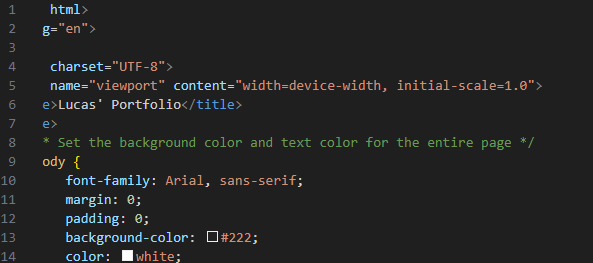
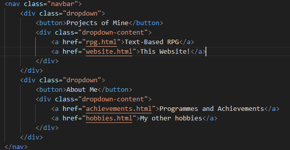
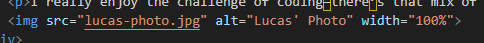
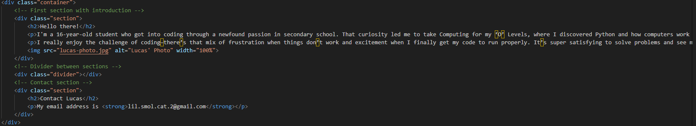
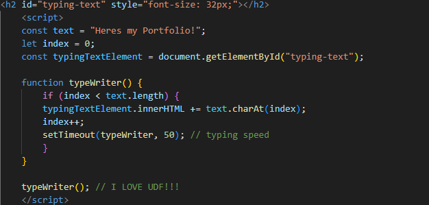

Making this project was a difficult experience, since I had to learn HTML from scratch. I spent a week on W3schools learning the basics, and realising it was barely anything like python, and more like C
Below, I will go through the progression of making the website, and the problems I had.
The first problem i encountered, was making the website more than just a white screen with some text. I had to inspect element other websites to see how it was done properly, while cross referring to W3.
The second issue i came into, was actually mking certain buttons work, dropdowns and properly linking to other pages. I got a hang of it after, and its quite useful to be able to, instead of cramping the home page.
Thirdly, i wanted to put in images, and i had issues with the size, and the pop up box with the alt="" when the image wasnt available. After some tweaking, i managed to even find theres dividers, to neaten up the website.
A lot of things went somewhat smoothly after, I played with headers, font sizes, to make the website more easy on the eyes. i changed the background color, and had a container for all the pages.
And lastly, i had a lot of trouble with the typing effect. I looked up a youtube video on it, then asked for tips from chatgpt. then i made it header2 so it was a decent size.
I'm quite proud of this website! Though, it feels bare bones, and leaves more to be desired. I hope to learn more!
My email address is lil.smol.cat.2@gmail.com